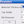
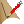
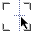

Phlatboyz PhlatScripT
v0.913
Introduction
The PhlatScripT is a set of SketchUp tools that will allow for fold cuts and stepped angles for airplane control surfaces not to mention a host of other cuts.
Check out the Phlatprinter picture gallery to see everything we would like it to do in the future.
Since the PhlatScripT is released as open source, anyone and everyone is welcome to download it and change it and experiment with it.
All we ask in return is that you keep us updated with your progress and share your add on’s with the rest of the world as open source.
The ultimate goal is to create a complete CAM solution directly within SketchUp capable of outputting 3D tool paths and possibly in the future will be the ability to not only output the g-code but control the Phlatprinter as well :)
I’m sure the PhlatScripT will be adapted for many different types of machines.
This will be great. Please share.
The PhlatScripT can not be used for commercial gain or sold in any form.
We are keeping this truly open source.
| Phlatboyz Command Toolbar | |
|---|---|
|  | Enter Phlatboyz parameters for material thickness, bit diameter, tab width and the safe origin, width and height. All g-code output is relative to this safe origin and only edges within this safe area will generate g-code. This will allow designs requiring multiple sheets to be contained within one SketchUp file. |
|
Inside Cut Tool -
This tool is used to develop cuts along the inside path of any edge that contains a face.
It differs from the outside cut tool in that the path cut direction will be counter-clockwise.
The cut path is offset from the edge by half the bit diameter.
Use the "Shift" key in the event that the cutting edge developed by the tool is on the wrong side of the edge you are selecting. Just press and hold "Shift" prior to clicking and the new edge will switch to the other side and back again when you release it. Use the "N" key to go to the next face among joining faces when the tool locks in on the wrong edge. Note: reversing the face (Edit/Face/Reverse Faces) prior to using the Inside Cut Tool will cause the cut direction to be reversed. |
|
|
Outside Cut Tool -
This tool is used to develop cuts along the outside path of any edge.
It differs from the inside cut tool in that the path cut direction will be clockwise.
The cut path is offset from the edge by half the bit diameter.
Use the "Shift" key in the event that the cutting edge developed by the tool is on the wrong side of the edge you are selecting. Just press and hold "Shift" prior to clicking and the new edge will switch to the other side and back again when you release it. Use the "N" key to go to the next face among joining faces when the tool locks in on the wrong edge. Note: reversing the face (Edit/Face/Reverse Faces) prior to using the Outide Cut Tool will cause the cut direction to be reversed. |
|

|
Tab Tool -
This tool is used to place tabs along any inside or outside Phlatboyz edge.
The tabs hold the parts in place while the foam sheet moves back and forth in the machine.
This tool uses the tab width and tab depth factors which are defined in the Parameters dialog. Use that dialog to define the tab tool parameters prior to using the tool; changing the values in the Parameters dialog will not affect tabs that have already been placed. When your design is completely cut out a hand tool will be needed to remove the parts that were held in by the tabs. |
|  |
Fold Tool -
This tool is used to define a fold line on a currently defined SketchUp edge.
It will not work on any inside or outside cut Phlatboyz edges.
The fold tool has two modes. The first mode will replace a single edge and shorten both sides of it by a fixed amount. The second mode (called the wide mode) will replace a complete edge. The "w" key is used to toggle between the two modes. For either mode the tool is in, the depth of the fold cut is controlled by pressing the keyboard "d" key. This allows toggling through 25%, 50%, 75% and 100% cut depth factors. This factor will result in the cut depth as a percentage of the material thickness. You can see the current depth factor on the lower right hand side of the screen. If one of those values is not what you actually want, then just type the number directly using the keyboard. |
|
Plunge Tool -
This tool is used to create a plunge point at any given cursor position.
The plunge tool creates a circle with a radius line extending from the center to the outside diameter which is determined by the bit diameter setting in the parameters menu. The line color is Brown. The diameter of the circle is whatever is currently set in the Phlatboyz "Bit Diameter" parameter. The plunge tool allows the generation of gcode required to plunge the bit at the depth indicated in the "Material Thickness" phlatboyz menu parameter. |
|
|  |
Centerline Tool -
This tool is used to define a center line cut on a currently defined SketchUp edge.
It will not work on any inside or outside cut Phlatboyz edges.
The depth of the centerline cut is the same as the fold tool which is controlled by pressing the keyboard "d" key. This allows toggling through 25%, 50%, 75% and 100% cut depth factors. This factor will result in the cut depth as a percentage of the material thickness. You can see the current depth factor on the lower right hand side of the screen. If one of those values is not what you actually want, then just type the number directly using the keyboard. |

|
Safe Area Tool -
Is used to graphically define the safe "PhlatPrinting" area for your model.
This tool uses the safe width and height defined in the parameters dialog and allows dynamic placement of the "safe" rectangle.
G-code output will be generated only from designated Phlatboyz edges within this safe rectangle and will be relative to the safe origin. |
| G-Code - Generates G-Code to a file that you specify. | |

|
Link to the Phlatboyz homepage. |
| Opens this help file. | |
| Phlatboyz Edge Context Menu | |
|---|---|
| These menu items appear in the "Phlat Edge" submenu when right clicking on any edge. | |
| Inside Edge | Selecting this command will mark selected edges as Phlatboyz Inside edges. No other change will be made to the edge. |
| Outside Edge | Selecting this command will mark selected edges as Phlatboyz Outside edges. No other change will be made to the edge. |
| Fold | This command will mark the selected edges as Phlatboyz Fold edges. Each edge line segment will be shortened by a fixed amount. |
| Centerline | This command will mark the selected edges as Phlatboyz Centerline edges. No other change will be made to the edge (i.e. it will not be shortened as the Fold Tool does.) |
| Clear Selected Edges | This command will clear selected edges that are marked as Phlatboyz edges. The edges will remain but they will no longer be Phlatboyz edges. |
| Clear All Edges | Selecting this command will clear all edges in the model that are marked as Phlatboyz edges. The edges will remain but they will no longer be Phlatboyz edges. The command does not depend on the current selection. |
| Erase Phlatboyz Edges | Selecting this command will erase all edges in the model which are marked as Phlatboyz edges. The edges will be removed from the model. The command does not depend on the current selection. |